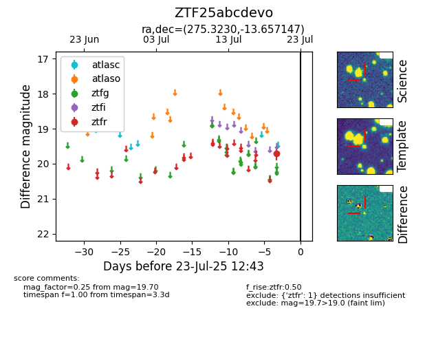

Target ZTF25abcdevo at 2025-07-23 11:52, see:
FINK: fink-portal.org/ZTF25abcdevo
Lasair: lasair-ztf.lsst.ac.uk/objects/ZTF25abcdevo
ALeRCE: alerce.online/object/ZTF25abcdevo
alt names
ZTF25abcdevo (ztf,fink)
coordinates:
equatorial (ra, dec) = (275.3230,-13.65715)
galactic (l, b) = (17.3714,+0.33034)
photometry
last ztfr=19.70
1 ztfr detections
